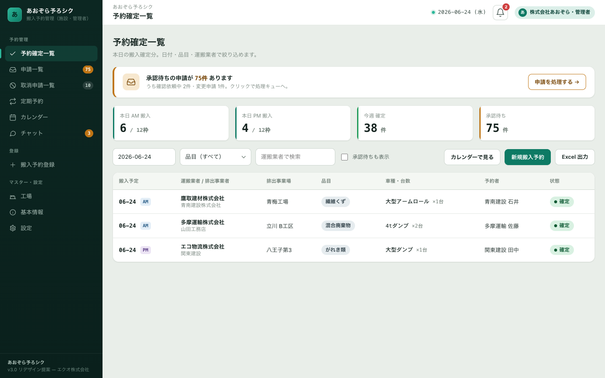
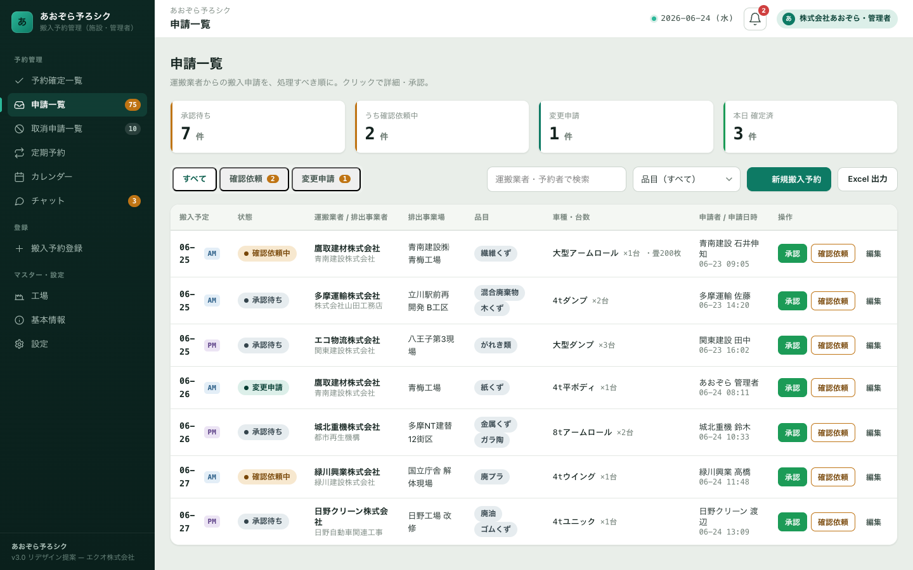
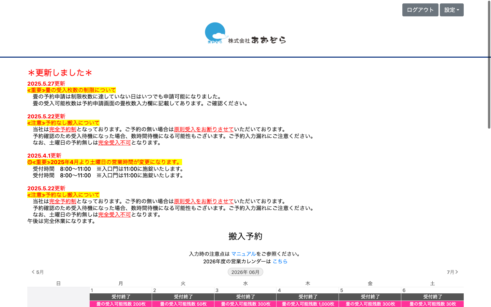
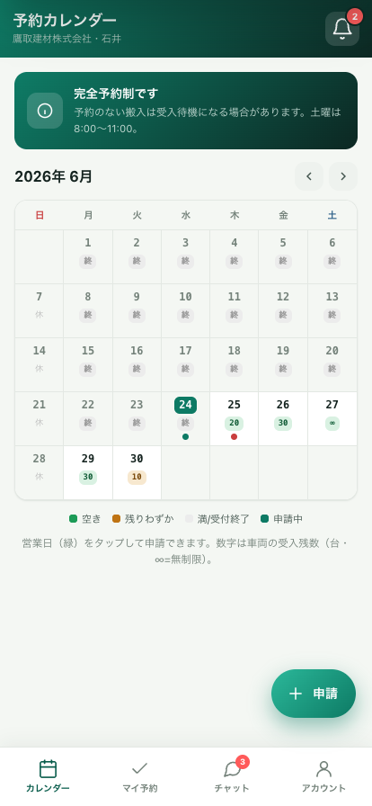

あおぞら予ろシクの現行画面と、リデザイン版の比較です。項目・操作は一切増減せず、情報の優先順位づけ・状態の可視化・入力の構造化だけを行いました。
毎日いちばん使う「申請を捌く」画面。現行は横長テーブル、リデザインは“処理キュー”に。


現行はPCの月カレンダー。リデザインは現場で使うスマホアプリ（PWA）に。


現行機能を保ったうえで、運用が大きく軽くなる仕組みを追加できます。
新規申請は施設へ、承認・確認依頼は業者へ即通知。アプリ未起動でも届きます。
予約や搬入の確認を電話に頼らずその場で。やりとりが記録に残ります。
ストア不要でインストール、オフライン表示、更新は即反映。PC・スマホ共通。
いきなり全部ではなく、まず要件定義で“現行機能の確定”から。リスクを抑えて段階的に進めます。
| ステップ | 内容 | 期間の目安 | |
|---|---|---|---|
| 1 | 要件定義・画面設計 | 現行機能の棚卸し、項目・権限の確定、画面仕様の合意 | 2〜3週 |
| 2 | フロント実装（全画面） | 管理コンソール＋予約者PWAのUI実装（このデモの作り込み） | 6〜10週 |
| 3 | 通知・チャット基盤 | Web Push（VAPID）、施設⇄業者メッセージ | 2〜4週 |
| 4 | 既存連携・データ移行 | 現行DB／業務との接続（現状調査のうえ個別見積） | 個別 |
| 5 | 運用・保守 | ホスティング、改善対応、問い合わせ | 継続 |
※ 費用は別途お見積りいたします。配車管理システムは別システムです。本番のプッシュ通知・インストールには独自ドメインのHTTPS（SSL）が必要です。